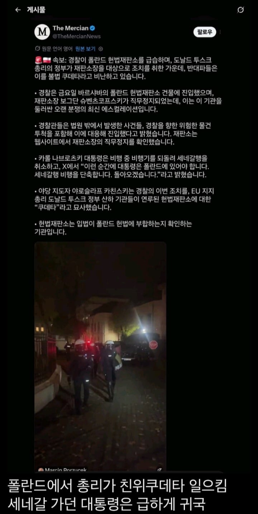
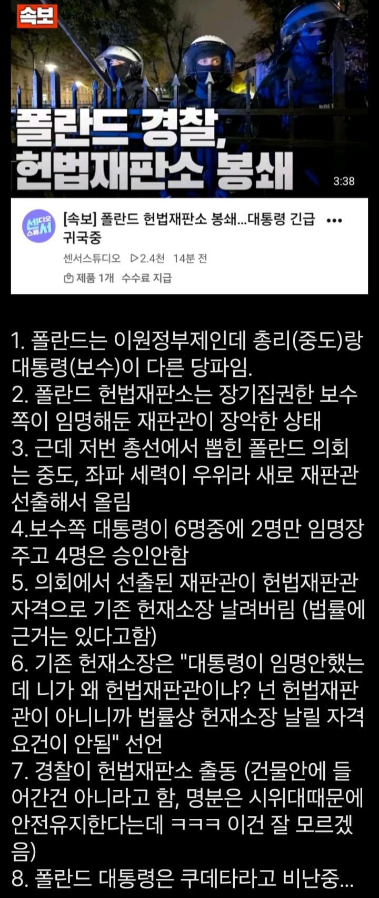
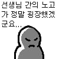

어어 하지마라
ㅋㅋㅋㅋㅋㅋㅋㅋㅋㅋㅋㅋㅋ
저러면 의회해산가능?
탱크를 많이 사가던 이유가 혹시
너네 그러고 있을때 아니잖아 / 군대가 안움직인게 다행인건가
엇..
한국도 내각제 도입해서 이원집정부제하면 ㄹㅇ야랄나겠네ㅋㅋㅋㅋ
어어어
존경하는 국민여러분 저는 피를 토하는 심정으로
?
맥주를 토하는 심정으로

역사적으로나 참 많이 닮은 두 국가...
21세기에 민주주의 국가에 친위쿠테타라니 어디 군부정권 집권중인 동남아도 아니고 이게 말이되냐 어?
그러게 그게 말이 되냐고 아 ㅋㅋㅋㅋㅋㅋㅋㅋㅋ
우린 이 게임을 해봤어요!!
자유민주주의가 아니었나보지~~ 민주주의만으로 거 국가 운영이 되겠어?

댓그떠 터진다터져
쿠데타는 쿠데타인데 서로 뒷배인 EU랑 미국 여론 눈치보느라 무력 사용은 적극적으로 할 수가 없는 애매한 상황인 거 같은데... 근데 여기까지 왔으면 자체적으로 정치적인 해결이 될 가능성이 없어서 누가 중재 안 하면 진짜 쿠데타와 내전으로 번지게 될듯
재판관 임명 거부 하고 친위쿠테타...어디서 많이 봤는데
ㄹㅇ 똑같네 ㅋㅋ
??? : 존경하는 폴란드 국민 여러분.
EU: 꼬레아 수출 잘 나간다더니...
옛날 미국이 대통령을 당선, 부통령은 낙선한 후보를. 이렇게 썼다가 국정운영 아예 안돼서 없애버렸는데 폴란드는 신기하네
대통령이 국회에 군을 투입하는 애미뒤진 선택을 하질 않길 바람
임명 거부...???
이제 다음달에 미국마저 친위쿠데타 터지면...
역시 한국이 유행이 빨라
이거는 선례가 있는거 같은데요...
이거완전
꾸떼따!
저것들 이상한거 수입했네
음 이것도 우리나라 모티브 게임인가? 요즘 몽롱하네 그려
국가중점 잘못찍음
난민 존나 들어가겠네 좆됐다
무기 사간 값은 지불해라...
저 나라도 (자유)민주주의가 중요한 나라야?
진짜 댓글 난리났네 ㅋㅋㅋㅋ
진짜 요즘 국제정세 존나 혼란하네 ㄷㄷ
어떤 정당이든 내로남불만 안하면 좋겠음
탱크 구매사유가??
저는 친 대통령 세력들을 일거에 척결하고, 자유 폴란드 민주주의를 지키기 위해